Bài viết này được viết vào tháng 3 năm 2026, nhưng mình vẫn muốn kể về nửa cuối năm ngoái.
Chắc bởi vì có cực kì nhiều chuyện để kể (có khi phải chia ra thành các post khác nữa :DD).
Tất cả mục tiêu học thuật và giấc mơ khoa học của mình trong 3.5 năm đại học đều được bùng nổ trong thời gian này, và tới tận bây giờ mình vẫn còn thấy vui vì nó.
1. Bảo vệ khóa luận tốt nghiệp và paper đầu tay
Đầu tiên là việc bảo vệ khóa luận tốt nghiệp, mình đã hoàn thành khóa luận và đã được bảo vệ thành công công trình sau hơn 1 năm nghiên cứu.
Mới đầu 2 thằng chỉ chọn chủ đề này ( Unlearning GAN ) tại vì nó nghe lạ lạ hay hay với cái mechanism 2 module đấu nhau của nó(:DD??). Rồi tới chuỗi ngày thằng Huy đi summer school bên Đài (đi date với Huy Phú) với bị viêm não (solo trong 2 tháng đầu luôn). Tiếp đó là chuỗi ngày chả hiểu mình đang làm cái gì, báo cáo thầy Thái thì cứ "sắp adapt được model rồi thầy ơi" rồi vẫn stuck tiếp (cảm ơn thầy vì đã không đấm tụi em :DD).
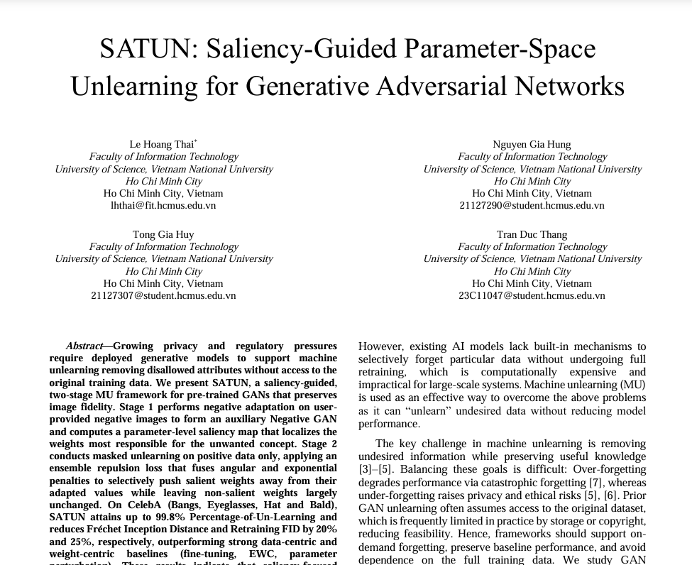
Mà hay ở chỗ 2 thằng vẫn cho ra được nhiều ý tưởng để tiếp tục chủ đề này, cứ như vậy vẫn lê lết cho đến lúc hoàn thành base, lit review, chốt ý tưởng. Đùng 1 cái đến 1 ngày đi họp với thầy Thái, thầy kêu là "2 đứa viết báo nha, nộp cái hội nghị này nè" ( khúc này là còn 2 tháng nữa là bảo vệ,1 tháng nữa là nộp paper ), cả 2 thằng ai cũng vui tại cuối cùng cũng được nộp conf, cũng chả nhưng mà cũng cóng tay tại cái gì cũng sắp tới rồi mà codebase với paper chưa viết.
Và thời gian còn lại là quả bán sống bán chết của 2 thằng, train server (kẹt xe dữ dằn do nhóm nào cũng cần train), eval trên kaggle, viết paper, sửa hyperparam, lặp lại..
Cuối cùng cũng tới ngày bảo vệ, chả hiểu sao cái công trình nghiên cứu 2 thằng nắm trong lòng bàn tay nhưng mà tới ngày bảo vệ thằng nào cũng run, đêm trước ngày bảo vệ còn không ngủ được :DD??. Lúc bảo vệ bị mấy thầy đấm sml nhưng cuối cùng vẫn 10 ( mấy em khóa sau mà đọc được cái này thì +1 kinh nghiệm nha)
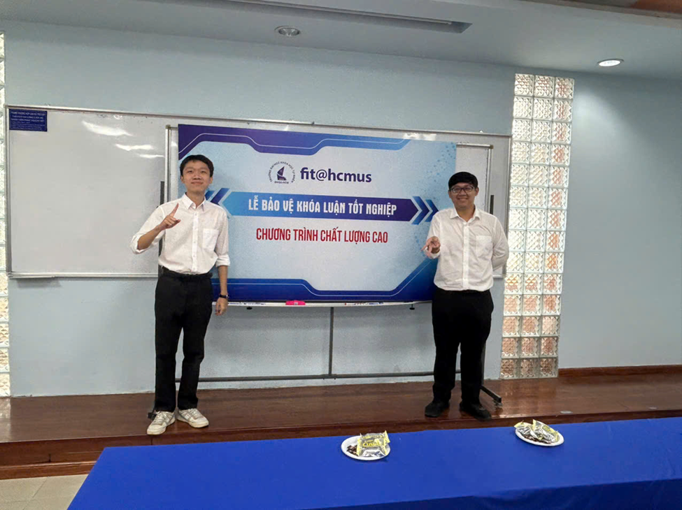
Cuối cùng thì vẫn là cảm ơn thầy Thái hehe.
2. Bạn bè
Trong thời gian này mình gặp thêm nhiều người bạn mới và gặp lại nhiều anh em cũ. Có nhiều khác biệt nhưng điểm chung là tất cả mọi người đều cho mình nhiều góc nhìn khác nhau về thứ gọi là "Khoa học"-cũng là thứ mà mình đã đang và định sẽ theo đuổi trong tương lai.
Số lượng bạn bè mình tăng bất thường trong 6 tháng này (ít nhất là bất thường với 1 người hướng nội :DD) làm mình khá là bất ngờ :DD, có khi nào mình không hướng nội vậy hông ~~
2.1 Huy Tống - Huy Phú
2 thằng này bằng 1 cách nào đó đã gặp và quen biết nhau trước. Sau đó thì mình biết được và làm quen mỗi thằng do công việc và hoàn cảnh không liên quan gì tới nhau, xong sau này cả 3 thằng mới vỡ lẽ ra là biết nhau :DD
Ảo vcl.
Huy Tống (cựu HCMUS) thì biết nó từ lúc quân sự năm nhất lựn. Vô random nên không ai quen ai, chọn giường tầng random luôn và nó thì chọn giường với mình (mình trên nó dưới). Hồi đó ngủ cái giường thì lỏng lẻo nên mỗi lần con vợ này trở mình là cái giường lắc như động đất luôn. Sau quân sự thì tới tận Khóa luận tốt nghiệp mới liên lạc lại và làm việc với nhau. Từ đó tiếp tục với chuyến đi Đài. À, thằng này Wjbu chúa.
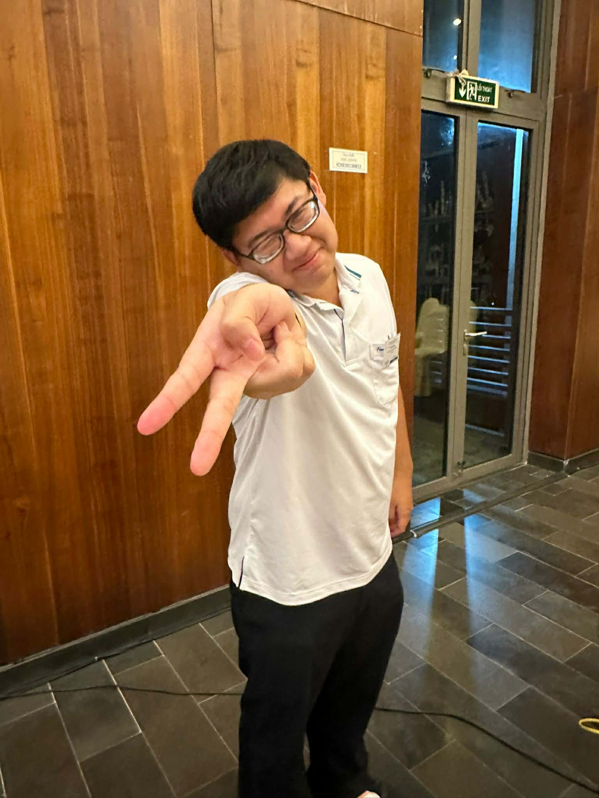
Vô tình quen biết Huy Phú (Cựu USTH-Hanoi và giờ là EM student) là do mình tham gia cái Erasmus Mundus Mentorship Program 2025. Lúc đó là không biết nó là ai luôn, chỉ biết là trước đó Huy Tống có nói là quen 1 thằng bạn EM, tự nhiên nộp hồ sơ xong Huy Tong kêu là "thằng bạn" nó nhắn là biết thằng nào tên Gia Hưng không, xong 2 thằng mới vỡ lẽ ra là biết nhau :DD. Rồi từ đó mới nói chuyện dần rồi quen dần như bây giờ. Hiện thằng này đang ở Ý, thỉnh thoảng thì ghé mấy chỗ gần Iran coi tên lửa
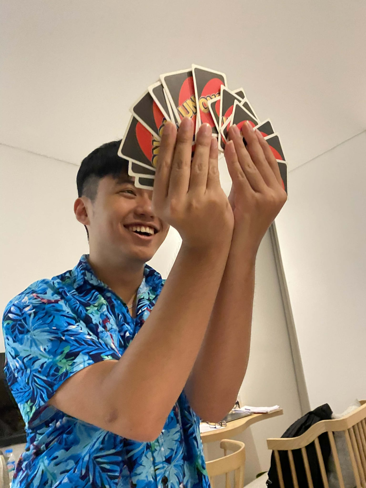
Điểm chung của 2 thằng này là đều thích ngủ và yêu thích vật lý nghiên cứu, dù thực tế là hướng này ở Việt Nam hiện đang khá ngợp ( năm 2025 ). Tinh thần khoa học của 2 thằng này khá là cao, các task tưởng chỉ có ở các viện nghiên cứu siêu tân tiến trong phim thì 2 con vợ này đều biết hoặc thậm chí là đang làm project luôn. Respect respect.
2.2 Duy Tùng
Tùng là cựu hs chuyên tin Lương Thế Vinh (Đồng Nai), giờ đang học CS ở VinUni.
Có thể nói ngắn gọn là GOAT máy tính trong tất cả các ae ( Nhì QG Nhì QG Nhì QG) ( Đọ tay với Thanh Hoa Bắc Đại ). Chơi với nhau từ hồi lớp 2 nhưng mà được đúng năm lớp 2 đó xong không chơi với nhau nữa do khác lớp khác trường. Xong đùng cái tới lớp 12 học IELTS chung nên có practice chung nhóm, xong từ đó mới nói chuyện lại. Tính xuôi tính ngược gì thằng này cũng học bá, giỏi mọi thứ luôn (từ toán đến lập trình thi đấu xong research nữa) nên khá là muốn học hỏi từ nó nhiều.
Mặc dù học giỏi nhưng mà thằng này lâu lâu vẫn điên theo chu kì, nên là lâu lâu vẫn chả hiểu nó đang làm/hay đang nói cái gì :DD??
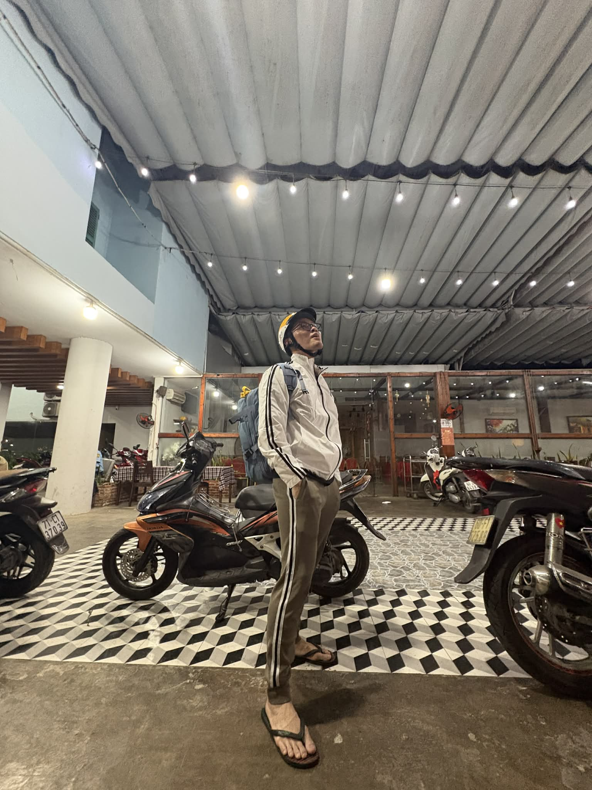
2.3 Huang Lab
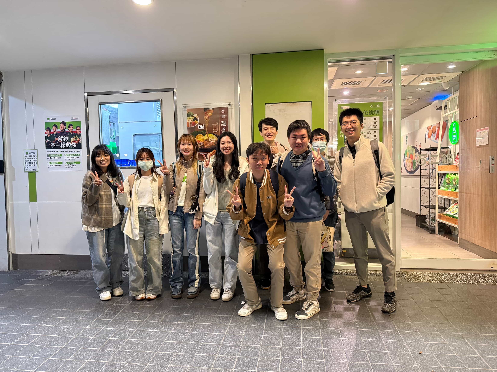
Thật là khó để nói hết về HuangLab trong 1 đoạn ngắn như thế này, vì vậy nên mình sẽ cố gắng miêu tả mỗi người trong 1 câu :DD
Từ trái qua phải lần lượt là:
- Demi : Lab manager, Thân thiện dễ gần với mình nhất (chuyên gia xin Demi đi muộn), gặp 1 chút khó khăn với tiếng Anh nhưng không phải vấn đề hehe.
- Keke : Master student, cảm giác như Keke hướng nội nhất Lab (Keke không phải tên thật, mình quên mất tên rồi tại vì quen miệng gọi vậy rồi)
- Yu-Hsuan : Master student, Nghệ nhất trong lab, hướng nội thứ 2 sau Keke, cảm giác Yu-Hsuan học giỏi mà khiêm tốn.
- Yu-Jia : Master student, fan Kpop của Lab, thích đi du lịch.
- Joy Lee : PhD Student, người trưởng thành nhất trong lab, cả về chuyên môn lẫn tính cách, nhưng mà cũng là người vui vẻ và năng động nhất.
- Chang-Yu : Master student, cảm giác như Chang-Yu khá giống mình vì có nhiều điểm chung, nhưng hay ngại trước đám đông.
- De-Fong : Research assistant, pha trộn giữa Joy Lee và Chang-Yu, hay ngại nhưng nói chuyện rất vui và dễ gần.
- Frank : (không rõ role nữa tại Frank nói mình là mới tốt nghiệp Bs nên sinh hoạt ở Lab 1 thời gian) cảm giác em út của Lab, tuy nhiên học giỏi và nói tiếng Anh cực tốt (mới có offer ở John Hopkins, chúc mừng bro :DD)
2.4 International friend
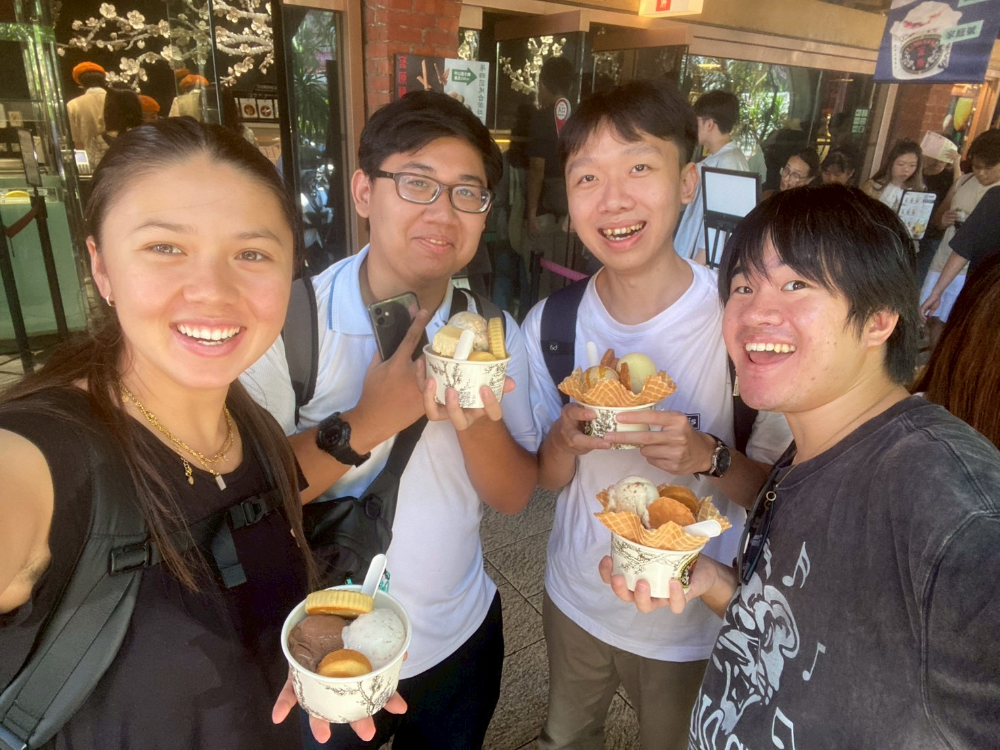
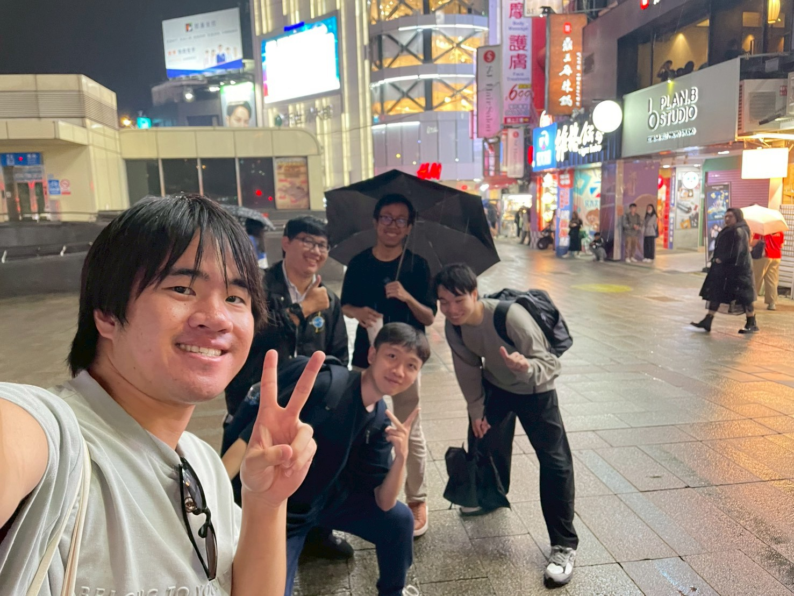
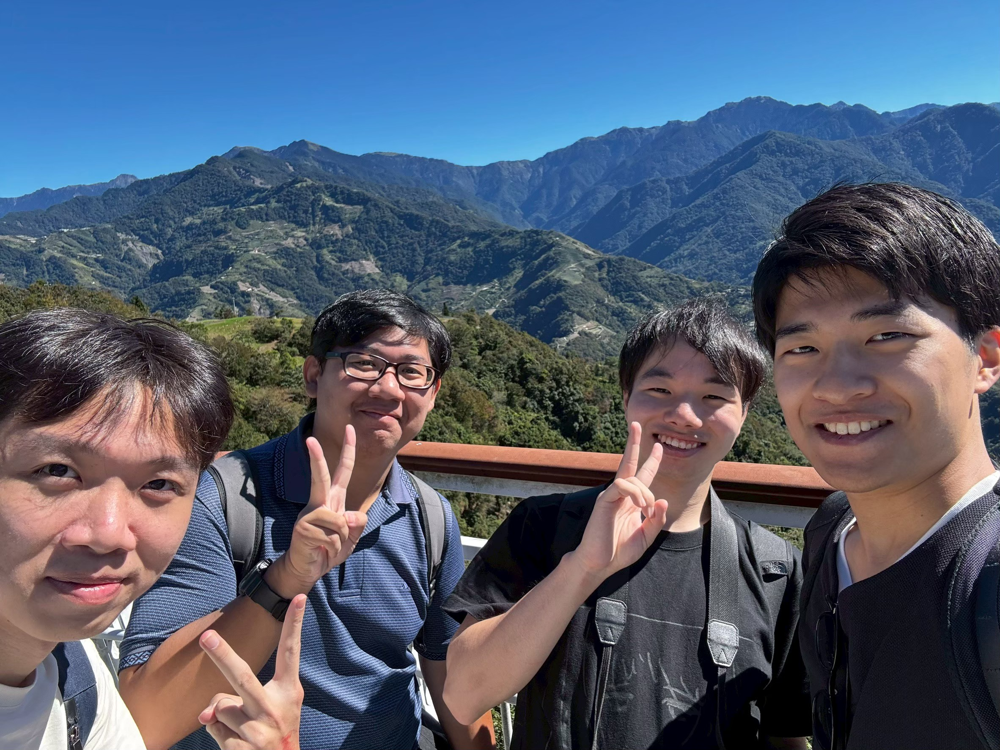
2.4.1 Hiroto
Hiện tại là researcher về Astro tại UTokyo, hồi mới gặp Hiroto do quá ấn tượng với profile của cha này nên toàn gọi là GOAT Hiroto :DD
Hồi mới gặp thì chỉ chào hỏi xã giao, cứ nghĩ Hiroto hướng nội ít nói, nhưng mà trên bus từ Gaomei Wetlands về lại trung tâm Taichung thì mình với Hiroto nói chuyện về khoa học như 2 thằng bạn thân. Từ đó mới biết Hiroto học Vật lý, sau đó do có thành tích học tập quá pro nên được chọn chuyên ngành (chứ không cần phải xét), ổng cũng muốn nộp MIT với mấy trường top bên Mỹ với châu Âu nữa nhưng mà cuối cùng chọn ở lại Nhật và chọn UTokyo (nghe đến đây ù tai luôn). Cũng khá là khó để hiểu hết mấy cái Hiroto nói do mình không nghiên cứu Vật lý, Hiroto giống mình ở chỗ khá là hứng thú với kiến thức Toán dùng nó để làm Vật lý, việc lấy Toán làm gốc để từ đó nghiên cứu khoa học là điều mà mình luôn ngưỡng mộ từ lâu (mình vẫn luôn đi theo phương pháp này (dù học toán ngu)).
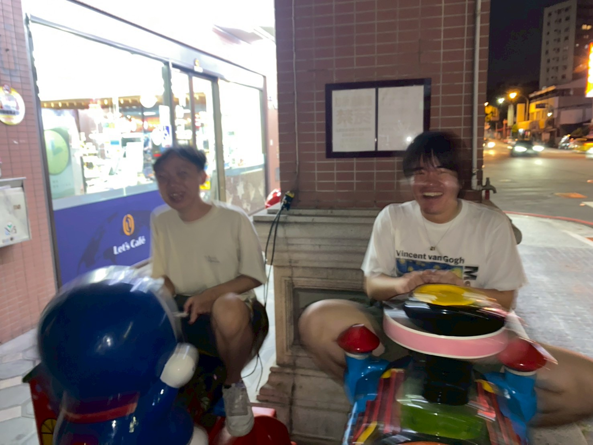
Hiện tại thì Hiroto đang vừa làm nghiên cứu 1 topic PhD ở Nhật và vừa colab nghiên cứu với Đài để xây dựng 1 kính thiên văn để theo dõi 1 loại sóng gì đó.
3 tháng bên Đài thì Hiroto có nói nhiều cái, nhưng mà vẫn nhớ câu nói "It's not about whether you're good or bad, but about whether you never give up."
2.4.2 Ryota
Được Hiroto giới thiệu tới Đài và hướng dẫn đề tài, Master năm 2 ở Keio Uni. Mới đầu hơi qua thì đúng kiểu siêu rụt rè (Why brooo) nhưng mà 1 thời gian thì cũng điên điên hehehe.
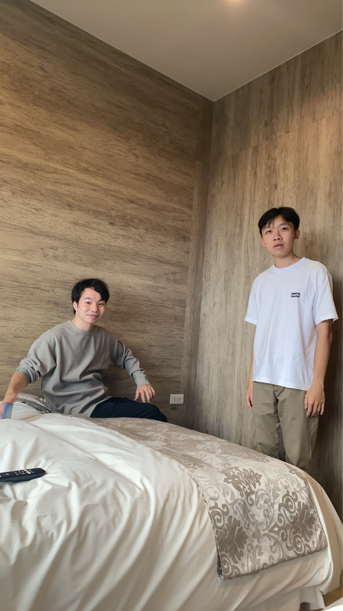
Trường Keio thì top server rồi nên trình của ông này khỏi bàn. Ngoài ngành đang học là Vật lý lượng tử (gớm vc ) thì Ryota còn nghiên cứu Astro Physics nữa, dù không hiểu nhiều nhưng lúc ngắm sao trước khách sạn mình có nói chuyện với Huy với Ryota về đủ thứ khoa học, Nobel 2016, sóng ánh sáng, hạt nhân, $E=mc^2$,... Cảm giác đây là 1 trong số ít người có cùng gu khoa học với mình hahahha (dù bro ở tận Tokyo T_T)
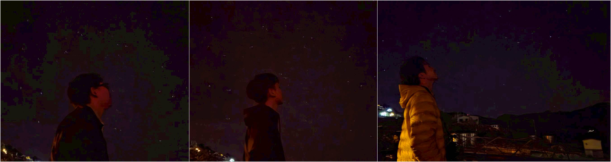
À quên nói, Ryota còn là người thích nghệ thuật, đúng cái vibe của ae Tokyo cả nhạc cả thời trang và gu ảnh, cái nào cũng nghệ.
Nhớ ăn nhiều rau vào và qua đường nhớ nhìn kỹ nha bro :DD
2.4.3 Naoki
1 học bá khác nữa, PhD năm 1 ở Tohoku University, topic của Naoki theo lời Huy Tống là active galactic nuclei, Naoki cũng cố gắng để giải thích cho mình hiểu nhưng mà khó quá ~~.
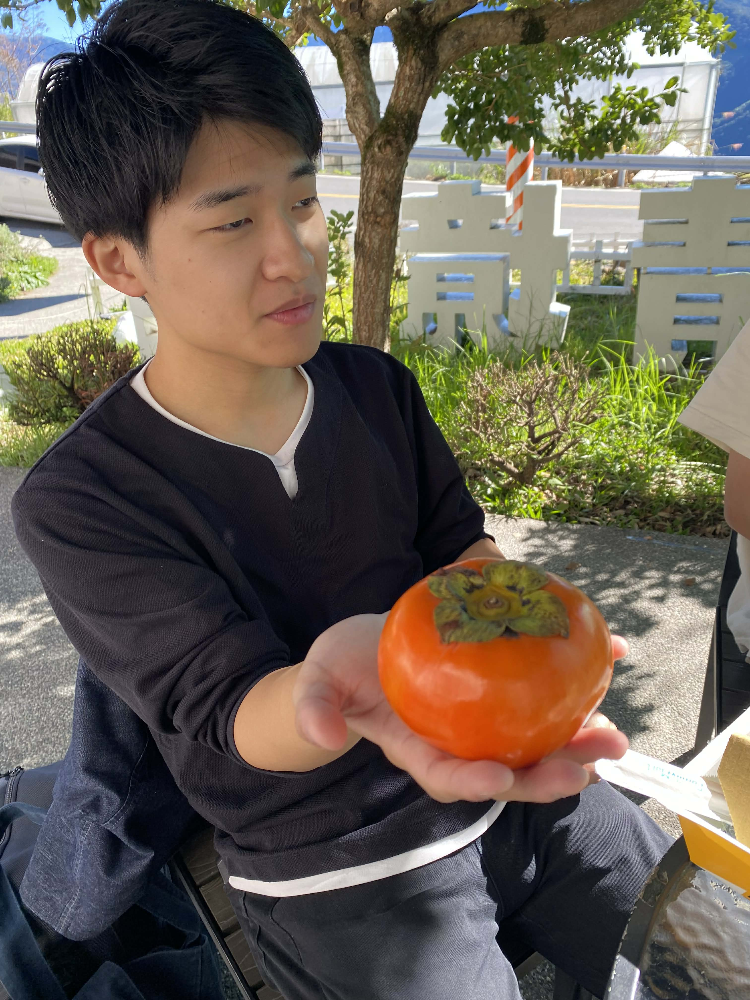
Chuyến đi tới Taichung và Hehuanshan cũng là lần đầu gặp Naoki, vậy mà nói chuyện hợp điên :DD Thế là thân luôn. 1 fact nữa là quê của Naoki ở Fukushima, nơi từng bị ảnh hưởng bởi thảm họa hạt nhân năm 2011, vì vậy nên mình cũng có hỏi về tình trạng ở đó, thì Naoki bảo là giờ mọi thứ đã ổn rồi, người dân cũng đã quay trở lại sinh sống bình thường, chỉ là phần trung tâm vẫn bị ảnh hưởng nặng bởi phóng xạ nên bị cấm luôn rồi.
P/s : Cảm ơn Naoki vì quả áo khoác cứu mình trên đỉnh Hehuanshan. Xin lỗi vì đã không chuẩn bị đầy đủ.
2.4.4 Lea
1 học sinh trao đổi đến từ Đức, học ngành kĩ thuật. Năng lượng của Lea đúng kiểu của các bạn phương Tây, cực kì vui vẻ và thoải mái, kiểu tích cực nhiều năng lượng. Cảm giác như Lea cực kì thích thiên nhiên và đi du lịch.
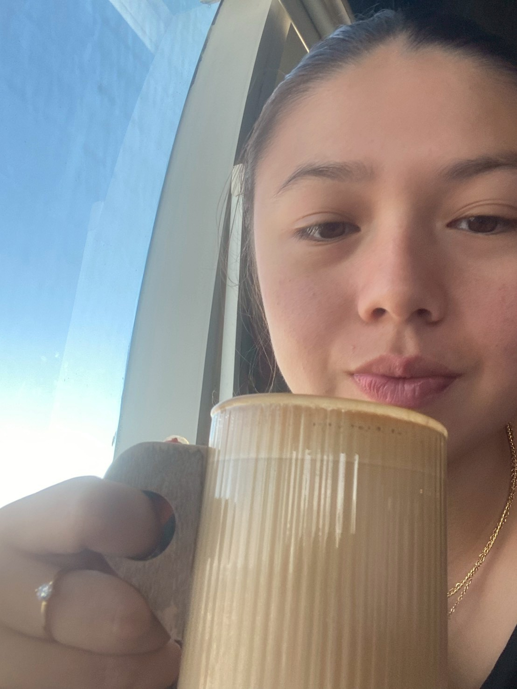
Quê của Lea ở Stuttgart, Đức. Tiếc là hơi xa chỗ của họ hàng mình (Berlin) nên qua chơi hơi bị khó. Nhưng mà khi biết vậy thì Lea cũng bảo là khi nào có dịp thì cứ qua nha Lea lead all kèo :DD
2.4.5 Naufal
GOAT Indonesia, cựu học giả MEXT, hiện tại là Postdoc tại Nhật. Naufal nói chuyện rất thân thiện và giới thiệu cho mình các món ăn của Indo, Nasi Goreng, Nasi Lemak, Rendang. Đồng thời cũng bất ngờ vì mình nói rằng ở Đài Bắc có nhà hàng Indo (xui là ngày hôm sau cái nhà hàng đó đóng vửa vĩnh viễn luôn :D?)
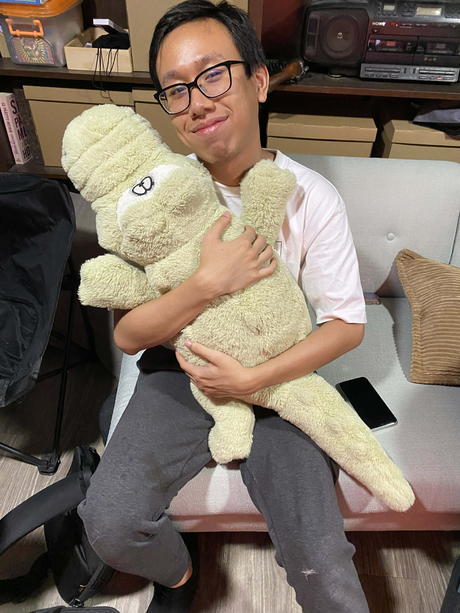
Hơi tiếc vì chưa có cơ hội nói chuyện nhiều với Naufal.
3. Kết
Còn nhiều tiếc nuối vì thời gian gặp nhau quá ít, thật vui vì được gặp mọi người. Hẹn gặp lại trong tương lai.